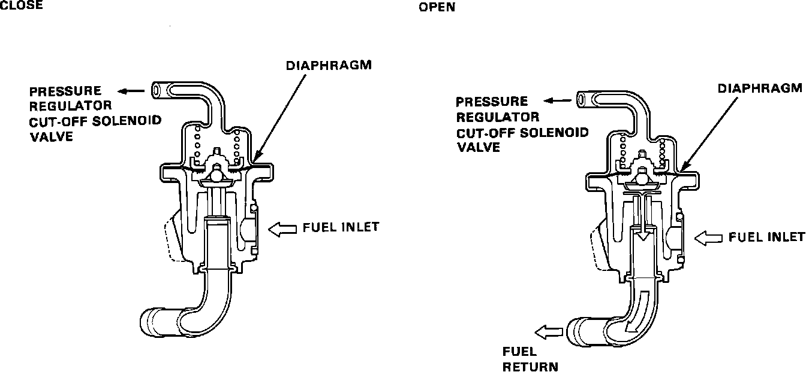

Fuel Pressure Regulator: Description and Operation
Fuel Pressure Regulator Cutaway:

The Fuel Pressure Regulator maintains a constant fuel pressure in the fuel rail and to the fuel injectors. It is attached to the down stream end of the fuel rail.
When fuel pressure exceeds 38 psi above intake manifold pressure, the Fuel Pressure Regulator diaphragm is forced upward opening the fuel return port. This allows excess fuel to flow into the fuel return line and back to the fuel tank. The Fuel Pressure Regulator also has a vacuum hose attached that monitors intake manifold vacuum. Manifold vacuum works against the Fuel Pressure Regulator diaphragm spring, so as manifold vacuum increases it helps compress the diaphragm spring lowering the regulated fuel pressure in the fuel rail. Like wise as manifold vacuum decreases fuel pressure increases to the pre-set maximum of 38 psi at 0 in. vacuum. This causes a slightly richer fuel mixture for low manifold vacuum, (high engine load) conditions. Under high manifold vacuum, (low engine load) conditions such as idle, the fuel pressure will be slightly lower than 38 psi.
The Fuel Pressure Regulator also uses a pressure regulator cut-off solenoid valve. When coolant temperature exceeds 194 degrees F (90 degrees C) and intake air temperature exceeds 176 degrees F (80 degrees C), the ECU activates the pressure regulator cut-off solenoid valve for 60 seconds after starting the engine, which cuts manifold vacuum to the Fuel Pressure Regulator. This increases fuel pressure at the fuel rail and the fuel injectors. The increased fuel pressure helps hot starting and prevents vapor lock.
For additional information regarding the pressure regulator cut-off solenoid valve, refer to "Computers and Control Systems".